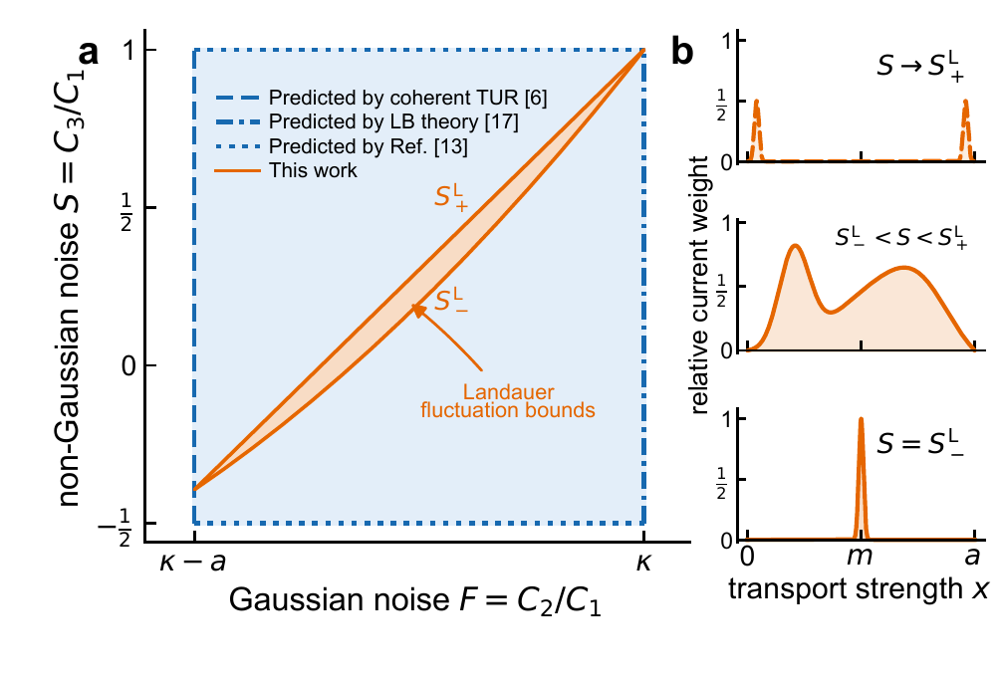
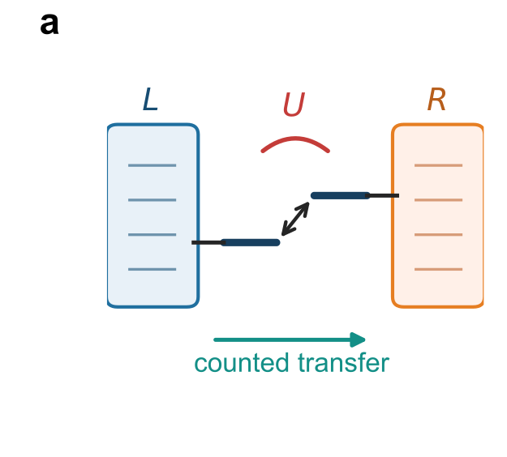
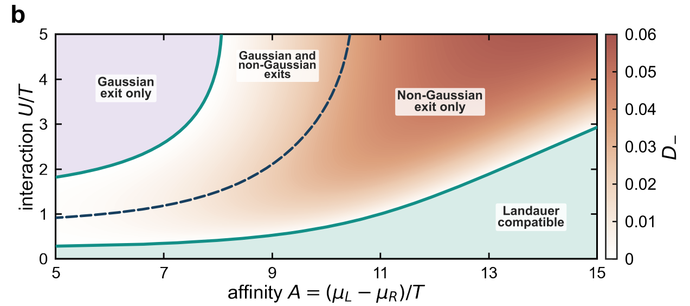
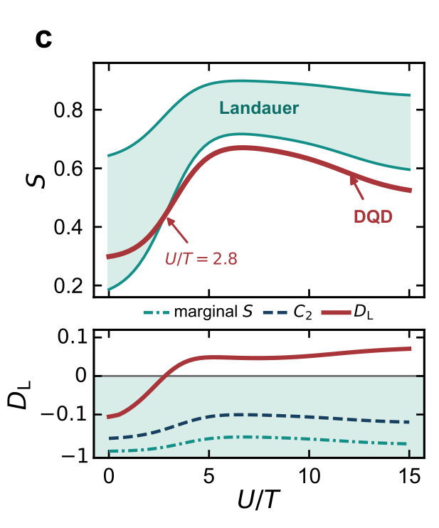
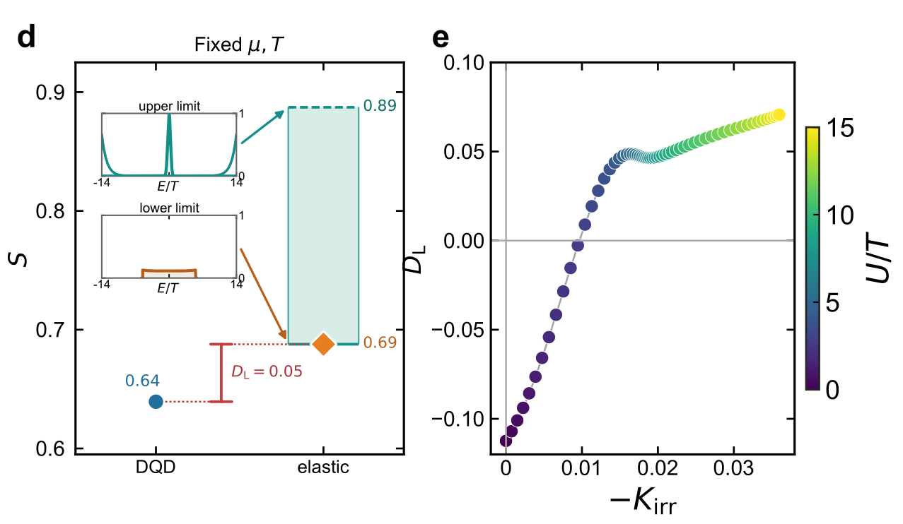

Separate constraints are too broad
The Gaussian window constrains \(F=C_2/C_1\); the marginal fermionic bound constrains \(S=C_3/C_1\). Neither asks whether the measured \(F\) and \(S\) belong to one common transmission.
P08LMT · manuscript V5
At known affinity, current and noise determine the complete Landauer interval of the third cumulant.
01 · the information gap
The Gaussian sector fixes the center and width of the counting record, but not its directional tail imbalance.
The Gaussian window constrains \(F=C_2/C_1\); the marginal fermionic bound constrains \(S=C_3/C_1\). Neither asks whether the measured \(F\) and \(S\) belong to one common transmission.
At fixed affinity and current, does any elastic transmission reproduce both \(C_2\) and \(C_3\)?
02 · exact Landauer closure
Define \(A=\beta(\mu_L-\mu_R)>0\), \(F=C_2/C_1\), \(S=C_3/C_1\), \(\kappa=\coth(A/2)\), and \(a=\tanh(A/4)\).
The measured current-noise pair must first be Landauer-compatible.
The strict interior and nondegenerate lower face are realizable; the upper face and formal endpoints are regular closure limits.
The conditional interval becomes a simple wedge.

03 · why the bound is complete
Noise fixes one current-weighted moment; the third cumulant fixes the next.
Every energy-channel process has bounded support.
The total current normalizes a probability measure.
\(F\) fixes \(m\); \(S\) fixes \(r\).
one strength at \(x=m\)
two positive support points
limit toward \(0\) and \(a\)
Nonnegative variance gives the lower face; bounded support gives the upper face. Substitution yields the theorem.
04 · manuscript Fig. 2a
A spinless serial double dot is exactly Landauer at \(U=0\), but state-conditioned for \(U\neq0\).

The Hamiltonian is quadratic and has an elastic Landauer representation.
One occupation shifts the energy required for the next, correlating successive transfer cycles.
05 · manuscript Fig. 2b
Interaction opens a region where the separate tests pass but the joint Landauer criterion fails.

The measured \(C_1\), \(C_2\), and \(C_3\) admit an elastic representation.
The Gaussian test passes; the conditional lower C₃ face fails.
The current-noise pair fails while the conditional C₃ test does not.
The Gaussian and non-Gaussian compatibility conditions both fail.
06 · manuscript Fig. 2c
For \(A=15\), the sign-stable crossing is bracketed between \(U/T=2.80\) and \(2.85\).

Nonweak lead hybridization \((\Gamma_L,\Gamma_R)/T=(1.0,0.8)\).
The conditional lower deficit changes sign; the separate \(C_2\) and marginal-\(S\) margins remain allowed.
The exact Landauer interval is \([0.687773,\;0.887236]\).
07 · manuscript Fig. 2d–e
Figure 2 closes the argument with the exact elastic extrema and an independent microscopic diagnostic.

The exact lower construction and upper regular limit preserve the measured \(C_1\) and \(C_2\); the DQD gives \(S=0.639385\).
Along this DQD cut, the positive deficit grows with \(-K_{\mathrm{irr}}\), supporting Coulomb-conditioned transfer cycles.
08 · experimental decision
Acquire stationary counting windows at one operating point, retain their covariance, and test one exact interval.
Known reservoir parameters and independent or mixing-resolved stationary windows.
Compute \(F=C_2/C_1\) and \(S=C_3/C_1\) with the full estimator covariance.
Propagate uncertainty through both Landauer faces.
Outside rejects the elastic class; inside remains a compatibility statement.
Exclude fixed passive elastic Landauer scattering through \(C_3\); do not infer a unique microscopic mechanism from the sign alone.
09 · conclusion
One theorem and one interacting counterexample define a practical boundary for elastic single-particle transport.
The result is necessary, sufficient, and independent of transmission shape or channel number.
The separate Gaussian and marginal-skewness tests can pass while every elastic representation fails.
The exit motivates correlated or inelastic modeling; the sign alone does not choose which one.